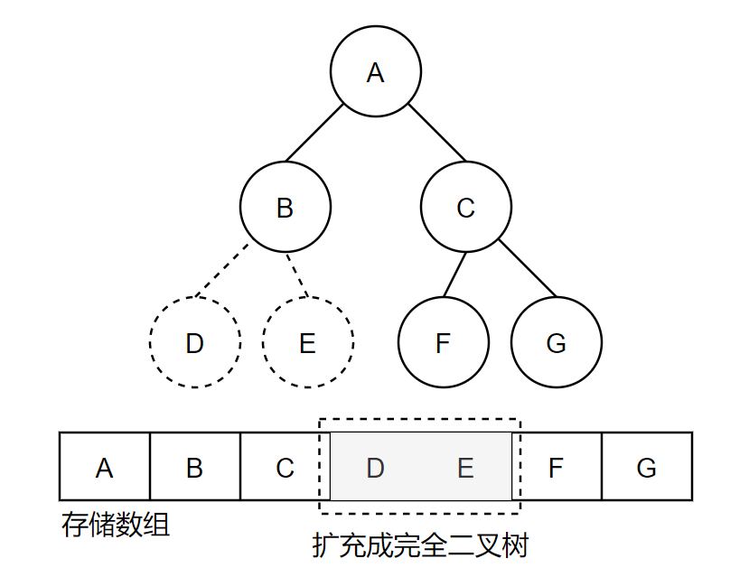

树
树的基本概念
树的节点
| 名称 |
概念 |
| 节点 |
使用树结构存储的每一个元素都称为节点。A, B, C…都是一个节点。 |
| 根节点 |
在上图中，节点A就是根节点，每棵非空树有且只有一个根节点，根节点没有父节点。 |
| 父节点 |
在上图中，节点A是节点B和节点C的父节点， 结点B是节点D和节点E的父节点。 |
| 子节点 |
同理，节点B和节点C是结点A的子节点，节点D和节点E是节点B的子结点。 |
| 兄弟节点 |
节点B和结点C同为兄弟节点。 |
| 叶节点 |
没有子节点的节点称为叶节点。 |
子树和空树
| 名称 |
概念 |
| 子树 |
在上图中，是一个节点A的子树，其根节点为A节点。对于节点B，也可以是一棵子树，其根节点是结点B。甚至，节点D，节点E，节点F，节点G也可以说是一棵子树。 |
| 空树 |
节点集合为空的树称为空树。 |
度和层次
| 名称 |
概念 |
| 节点的度 |
对于一个父节点，其拥有的子结点树称为该节点的度。在上图中，节点B有节点D和节点E两个子结点，故节点B的度为2。 |
| 树的度 |
一棵树的度是树内各结点的度的最大值。 |
| 节点的层次 |
在一棵树中，根节点所在的层的第一层，根节点的子节点所在的层为第二层。在上图中，根节点A在第一层，节点B和节点C在第二层，节点D,E,F,G在第三层。 |
有序树和无序树
森林
由m（m ≥ 0）个互不相交的树组成的集合称为森林。
二叉树
满足二叉树的条件
- 其本身是有序树；
- 树中包含的各个节点的度不能超过2，也就是最多有2个子节点；
二叉树的性质
- n层的二叉树，第 n 层最多有 2n-1 个节点；
- 层数为 n 的二叉树，最多有 2n -1 个节点；
二叉树的几种状态
- 满二叉树
- 完全二叉树
满二叉树
除最后一层的无任何子节点外，其他每个父节点都有两个子节点的二叉树称为 满二叉树。
它是二叉树的一种状态，在叶子不断累加的过程中出现的一种满的状态。
完全二叉树
对于一个二叉树，它的节点依据从上到下，从左到右的顺序组成。
二叉树除掉最后一层外的所有节点组成一个满二叉树。
二叉树的数组描述
二叉树的数组只能用于完全二叉树。因此，对于一些非完全的二叉树，需要将二叉树扩充成一个 完全二叉树。
如果节点n是有子节点，则节点n的左孩子的位置是 2 * n， 右孩子的位置是 2 * n + 1。

由于需要将树拓展成完全二叉树，使得一些并不存在的树节点不得不也占用着内存空间，这样的操作是没有意思的。因此，二叉树的描述更多的是使用链表的形式。
二叉树的链表描述
在二叉树的描述中，链表描述是二叉树最常用的描述形式。
每一个二叉树的节点都是一个链表的节点。一个链表的节点空间里存储着二叉树节点element域，二叉树节点的左子节点指针left_child，二叉树节点的右子节点指针right_child。
因此，二叉树节点的链表节点表示如下：
binary_tree_node.h
1
2
3
4
5
6
7
8
9
10
11
12
13
14
15
16
17
18
19
20
21
22
|
template<class T>
struct BinaryTreeNode
{
T element;
BinaryTreeNode<T> * leftChild;
BinaryTreeNode<T> * rightChild;
BinaryTreeNode()
{
leftChild = rightChild = nullptr;
}
BinaryTreeNode(const T & theElement,
BinaryTreeNode * theLeftChild,
BinaryTreeNode * theRightChild)
{
element = theElement;
leftChild = theLeftChild;
rightChild = theRightChild;
}
};
|
二叉树的四种常用操作
上图所示是各种遍历方式下，节点的访问顺序。无论是前序遍历，中序遍历还是后序遍历，对节点的访问顺序都是一样的，都是先左子树，后右子树，唯一不同的是，对于根节点的输出顺序而已。
前序遍历：考察一个节点，即立刻输出该节点的值，然后遍历其左子树，左子树遍历完后，再遍历右子树。（根 -> 左 -> 右）
上图前序遍历的结果为：1 -> 2 -> 4 -> 6 -> 7 -> 8 -> 3 -> 5
中序遍历：考察一个节点，不会马上输出该节点的值，而是暂存，先遍历所有的左子树，左子树遍历完后，输出该节点，然后再遍历右子树。（左 -> 根 -> 右）
上图中序遍历的结果为：4 -> 7 -> 6 -> 8 -> 2 -> 1 -> 3 -> 5
后序遍历：考察一个节点，先遍历所有的左子树，左子树遍历完后，再遍历所有的右子树，最后再输出该节点。（左 -> 右 -> 根 )
上图后序遍历的结果为：7 -> 8 -> 6 -> 4 -> 2 -> 5 -> 3 -> 1
二叉树的代码实现
定义一个二叉树的节点结构。
binary_tree_node.h
1
2
3
4
5
6
7
8
9
10
11
12
13
14
15
16
17
18
19
20
21
22
23
24
25
26
27
28
29
30
31
32
|
#ifndef __BINARY_TREE_NODE_H_
#define __BINARY_TREE_NODE_H_
template<class T>
struct BinaryTreeNode
{
T element;
BinaryTreeNode<T> * leftChild;
BinaryTreeNode<T> * rightChild;
BinaryTreeNode()
{
leftChild = rightChild = nullptr;
}
BinaryTreeNode(const T & theElement, BinaryTreeNode * theLeftChild, BinaryTreeNode * theRightChild)
{
element = theElement;
leftChild = theLeftChild;
rightChild = theRightChild;
}
};
#endif
|
定义一个二叉树的抽象结构。
binary_tree.h
1
2
3
4
5
6
7
8
9
10
11
12
13
14
15
16
17
18
19
20
21
22
23
24
25
26
27
28
29
30
31
32
33
|
#ifndef __BINARY_TREE_H_
#define __BINARY_TREE_H_
#include <functional>
template<class T>
class BinaryTree
{
public:
virtual ~BinaryTree() {}
virtual bool empty() const = 0;
virtual uint16_t size() const = 0;
virtual void preOrder (void (*) (T *)) = 0;
virtual void inOrder (void (*) (T *)) = 0;
virtual void postOrder (void (*) (T *)) = 0;
virtual void levelOrder(void (*) (T *)) = 0;
};
#endif
|
以递归的方式的方式实现一个二叉树。
link_binary_tree.h
1
2
3
4
5
6
7
8
9
10
11
12
13
14
15
16
17
18
19
20
21
22
23
24
25
26
27
28
29
30
31
32
33
34
35
36
37
38
39
40
41
42
43
44
45
46
47
48
49
50
51
52
53
54
55
56
57
58
59
60
61
62
63
64
65
66
67
68
69
70
71
72
73
74
75
76
77
78
79
80
81
82
83
84
85
86
87
88
89
90
91
92
93
94
95
96
97
98
99
100
101
102
103
104
105
106
107
108
109
110
111
112
113
114
115
116
117
118
119
120
121
122
123
124
125
126
127
128
129
130
131
132
133
134
135
136
137
138
139
140
141
142
143
144
145
146
147
148
149
150
151
152
153
154
155
156
157
158
159
160
161
162
163
164
165
166
167
168
169
170
171
172
173
174
175
176
177
178
179
180
181
182
183
184
185
186
187
188
189
190
191
192
193
194
195
196
197
198
199
200
201
202
203
204
205
206
207
208
209
210
211
212
213
214
215
216
217
218
219
220
221
222
223
224
225
226
227
228
229
230
231
232
233
234
235
236
237
238
239
240
241
242
243
244
245
246
247
248
249
250
251
252
253
254
255
256
257
258
259
260
261
262
263
264
265
266
267
268
269
270
271
272
273
274
275
276
277
278
279
280
281
282
283
284
285
286
287
288
289
290
291
292
293
294
295
296
297
298
299
300
301
302
303
304
305
306
307
308
309
310
311
312
313
314
315
316
317
318
319
320
321
322
323
324
325
326
327
328
|
#ifndef __LINK_BINARY_TREE_H_
#define __LINK_BINARY_TREE_H_
#include <iostream>
#include "binary_tree.h"
#include "binary_tree_node.h"
template<class E>
class LinkedBinaryTree : public BinaryTree<BinaryTreeNode<E>>
{
public:
LinkedBinaryTree() { mRoot = nullptr; mTreeSize = 0; }
~LinkedBinaryTree() { erase(); }
bool empty() const { return mTreeSize == 0; }
uint16_t size() const { return mTreeSize; }
E * rootElement() const;
void makeTree (const E & element, LinkedBinaryTree<E> &, LinkedBinaryTree<E> &);
LinkedBinaryTree<E> & removeLeftSubTree();
LinkedBinaryTree<E> & removeRightSubTree();
void preOrder(void (* theVisit)(BinaryTreeNode<E> *))
{
visit = theVisit;
preOrder(mRoot);
}
void inOrder(void (* theVisit)(BinaryTreeNode<E> *))
{
visit = theVisit;
inOrder(mRoot);
}
void postOrder(void (* theVisit)(BinaryTreeNode<E> *))
{
visit = theVisit;
postOrder(mRoot);
}
void levelOrder(void (*)(BinaryTreeNode<E> *));
void preOrderOutput()
{
preOrder(output);
std::cout << std::endl;
}
void inOrderOutput()
{
inOrder(output);
std::cout << std::endl;
}
void postOrderOutput()
{
postOrder(output);
std::cout << std::endl;
}
void levelOrderOutput()
{
levelOrder(output);
std::cout << std::endl;
}
void erase()
{
postOrder(dispose);
mRoot = nullptr;
mTreeSize = 0;
}
uint16_t height() const { return height(mRoot); }
protected:
BinaryTreeNode<E> * mRoot;
uint16_t mTreeSize;
static void (* visit)(BinaryTreeNode<E> *);
static uint16_t count;
static void preOrder(BinaryTreeNode<E> * t);
static void inOrder(BinaryTreeNode<E> * t);
static void postOrder(BinaryTreeNode<E> * t);
static void countNodes(BinaryTreeNode<E> * t)
{
visit = addToCount;
count = 0;
preOrder(t);
}
static void dispose(BinaryTreeNode<E> * t)
{
delete t;
}
static void output(BinaryTreeNode<E> * t)
{
std::cout << t->element << " ";
}
static void addToCount(BinaryTreeNode<E> * t)
{
count ++;
}
static uint16_t height(BinaryTreeNode<E> * t);
};
template<typename E>
void (* LinkedBinaryTree<E>::visit)(BinaryTreeNode<E>*);
template<class E>
E * LinkedBinaryTree<E>::rootElement() const
{
if (mTreeSize == 0)
{
return nullptr;
}
return &(mRoot->element);
}
template<class E>
void LinkedBinaryTree<E>::makeTree(const E & element,
LinkedBinaryTree<E> & left,
LinkedBinaryTree<E> & right)
{
mRoot = new BinaryTreeNode<E> (element, left.mRoot, right.mRoot);
mTreeSize = left.mTreeSize + right.mTreeSize + 1;
left.mRoot = right.mRoot = nullptr;
left.mTreeSize = right.mTreeSize = 0;
}
template<class E>
LinkedBinaryTree<E> & LinkedBinaryTree<E>::removeLeftSubTree()
{
if (mTreeSize == 0)
{
}
LinkedBinaryTree<E> leftSubTree;
leftSubTree.mRoot = mRoot->leftChild;
count = 0;
leftSubTree.mTreeSize = countNodes(leftSubTree.mRoot);
mRoot->leftChild = nullptr;
mTreeSize -= leftSubTree.mTreeSize;
return leftSubTree;
}
template<class E>
LinkedBinaryTree<E> & LinkedBinaryTree<E>::removeRightSubTree()
{
if (mTreeSize == 0)
{
}
LinkedBinaryTree<E> rightSubTree;
rightSubTree.mRoot = mRoot->rightChild;
count = 0;
rightSubTree.mTreeSize = countNodes(rightSubTree.mRoot);
mRoot->rightChild = nullptr;
mTreeSize -= rightSubTree.mTreeSize;
return rightSubTree;
}
template<class E>
void LinkedBinaryTree<E>::preOrder(BinaryTreeNode<E> * t)
{
if (t != nullptr)
{
LinkedBinaryTree<E>::visit(t);
preOrder(t->leftChild);
preOrder(t->rightChild);
}
}
template<class E>
void LinkedBinaryTree<E>::inOrder(BinaryTreeNode<E> * t)
{
if (t != nullptr)
{
inOrder(t->leftChild);
LinkedBinaryTree<E>::visit(t);
inOrder(t->rightChild);
}
}
template<class E>
void LinkedBinaryTree<E>::postOrder(BinaryTreeNode<E> * t)
{
if (t != nullptr)
{
postOrder(t->leftChild);
postOrder(t->rightChild);
LinkedBinaryTree<E>::visit(t);
}
}
template<class E>
void LinkedBinaryTree<E>::levelOrder(void (* theVisit)(BinaryTreeNode<E> *))
{
}
template<class E>
uint16_t LinkedBinaryTree<E>::height(BinaryTreeNode<E> * t)
{
if (nullptr == t)
{
return 0;
}
uint16_t hl = height(t->leftChild);
uint16_t hr = height(t->rightChild);
if (hl > hr)
{
return ++hl;
}
return ++hr;
}
#endif
|
编写一个main.cpp验证。
1
2
3
4
5
6
7
8
9
10
11
12
13
14
15
16
17
18
19
20
21
22
23
24
25
26
27
28
29
30
31
32
33
34
35
36
|
#include <iostream>
#include "link_binary_tree.h"
int main(int argc, char * argv[])
{
printf("Binary Tree\r\n");
LinkedBinaryTree<int> a, x, y, z;
y.makeTree(1, a, a);
z.makeTree(2, a, a);
x.makeTree(3, y, z);
y.makeTree(4, x, a);
std::cout << "Number of nodes = ";
std::cout << y.size() << std::endl;
std::cout << "height = ";
std::cout << y.height() << std::endl;
std::cout << "Pre order Sequence is ";
y.preOrderOutput();
std::cout << "In order Sequence is ";
y.inOrderOutput();
std::cout << "Post order Sequence is ";
y.postOrderOutput();
return 0;
}
|
main函数描述的一个下图所示的二叉树结构。
运行结果：
1
2
3
4
5
6
7
| $ ./tree_list
Binary Tree
Number of nodes = 4
height = 3
Pre order Sequence is 4 3 1 2
In order Sequence is 1 3 2 4
Post order Sequence is 1 2 3 4
|